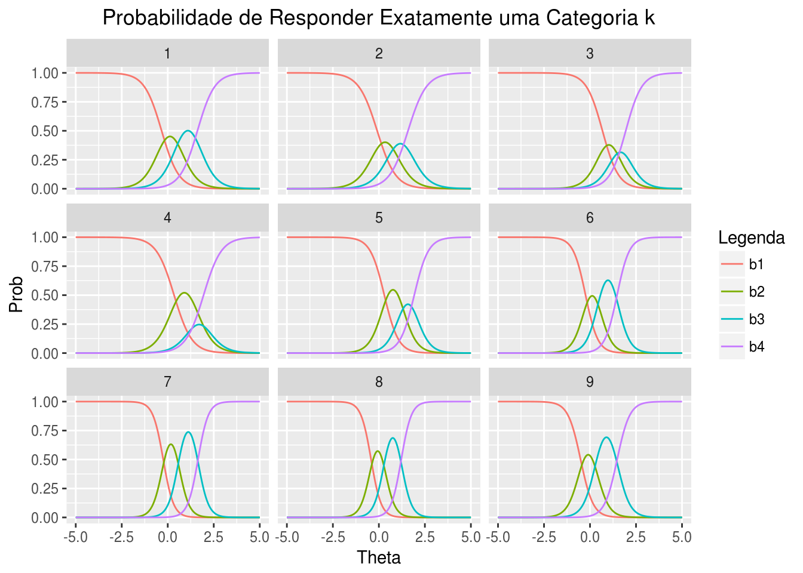

O modelo de resposta gradual foi ajustado aos dados originais (não disponı́veis). Use as estimativas dos parâmetros (disponı́vel no código) para gerar respostas para 1000 alunos. Use o pacote “mirt” do R para ajustar o modelo de resposta gradual às respostas geradas.
Carregamento dos pacotes utilizados:
library(dplyr)
library(irtoys)
library(mirt)
library(ggplot2)
library(reshape2)
set.seed(2345) # sementePreparação:
### Valores estimados dos parametros no modelo de resposta gradual
### para o questionario de hiperatividade em
### Costa, M.C.M (2014) - Aplicando a Teoria de Resposta ao Item a
### dados psicométricos, UFRJ.
a.par <- c(2.258,2.019,2.250,2.072,2.654,2.873,3.475,3.465,2.949)
b1.par <- c(-0.347,-0.144,0.615,0.317,0.269,-0.321,-0.289,-0.489,-0.547)
b2.par <- c(0.527,0.708,1.342,1.437,1.138,0.444,0.592,0.303,0.311)
b3.par <- c(1.515,1.560,1.959,1.986,1.940,1.452,1.622,1.210,1.409)
n.itens <- length(a.par)
nr <- 1000 # numero de respondentes
### geracao das proficiencias
theta <- rnorm(nr,0,1)
resp <- matrix(0,nr,n.itens)
### geracao das respostas
mat.prob <- matrix(0,n.itens,4)
for (j in 1:nr) {
mat.prob <- cbind(rep(0,n.itens),exp(-a.par*(theta[j]-b1.par)),exp(-a.par*(theta[j]-b2.par)),exp(-a.par*(theta[j]-b3.par)))
mat.prob <- 1/(1+mat.prob)
mat.prob <- cbind(-t(apply(mat.prob,1,diff)),mat.prob[,4])
for (i in 1:n.itens)
resp[j,i] <- sample(4,1,replace=F,mat.prob[i,])
}
### ajuste do modelo de resposta gradual via "mirt" utilizando as respostas simuladas
# write(t(resp),file="/home/allan/Documents/1S2018/TRI/unidade4/lista4/dados.mrg.txt",ncol=9)
resp <- read.table(file="/home/allan/Documents/1S2018/TRI/unidade4/lista4/dados.mrg.txt")Ajuste do modelo:
# --- 2ª parte - utilizar as respostas geradas (com os thetas simulados) para estimar novos parametros
### ajuste do modelo de resposta gradual via "mirt" utilizando as respostas simuladas
mrg <- mirt(resp,1,itemtype=c('graded'))
prof.est <- fscores(mrg, full.scores=TRUE)
par.est <- coef(mrg,IRTpars=TRUE)
# plot(theta,prof.est)
# abline(0,1)Elabore gráficos com as curvas carcterísticas de cada item, i.e., \(P_{ik}^{+}(\theta)\) para as categorias de cada item.
Curvas Características dos Itens (CCI):
Preparando os dados para gerar os gráficos:
# --- 3ª parte - preparar os dados para gerar as CCI's
### objetivo: grafico com as CCI ' s de cada item POR CATEGORIA
# usar facett_wrap para itens
# retirando ultimo item da lista par.est
par.est2 <- par.est[-length(par.est)]
# passando de lista para matriz
par.est_n <- Reduce('rbind', par.est2)
a.par_n <- par.est_n[,1]
b1.par_n <- par.est_n[,2]
b2.par_n <- par.est_n[,3]
b3.par_n <- par.est_n[,4]
### geracao das proficiencias
# theta <- rnorm(nr,0,1)
# criando um range gde de thetas
xtheta <- seq(-5,5, 0.01)Calculo das probabilidades:
# ---------------- probabilidades P+
### geracao das respostas
# matriz para guardar a sprobabilidades
# mat.prob_n <- matrix(0,n.itens,length(theta)) #teremos 1 matriz 9x4 para cada respondente (theta_j)
mat.prob_n <- matrix()
# # lista para guardar as matrizes
lista_mat.prob_n <- list() # nao precisaremos agora
for (j in 1:length(xtheta)) {
# calculo das proobabilidades para cada b_k dentro da formula da prob P_ik(theta_j)
prob_b1 <- 1/(1+exp(-a.par_n*(xtheta[j]-b1.par_n)))
prob_b2 <- 1/(1+exp(-a.par_n*(xtheta[j]-b2.par_n)))
prob_b3 <- 1/(1+exp(-a.par_n*(xtheta[j]-b3.par_n)))
prob_b4 <- rep(1, n.itens) #b_0
# exp(-a.par_n*(theta[j]-b2.par_n)),
# exp(-a.par_n*(theta[j]-b3.par_n)))
mat.prob_n <- cbind(prob_b1, prob_b2, prob_b3, prob_b4)
# nao estah guadando a probabilidade
lista_mat.prob_n[[j]] <- mat.prob_n # nao eh necessario - depois so pegaremos um range de theta
}
mat.prob_geral_n <- Reduce("rbind", lista_mat.prob_n)
head(as.data.frame(mat.prob_geral_n, row.names = FALSE),18)Gráfico:
data_long_n <- as.data.frame(cbind(rep(1:9, nrow(mat.prob_geral_n)/9), rep(xtheta, each=9), mat.prob_geral_n))
colnames(data_long_n) <- c("item", "xtheta", "b1", "b2", "b3", "b4")
# se nao der certo, fazer por apply no ggplot
data_long_n2 <- data_long_n %>%
melt(id = 1:2)
mypalette <- c( '#e6194b' , "#3cb44b", "#ffe119", '#aa6e28')
p1 <- data_long_n2 %>%
ggplot(aes(x=xtheta, y=value, colour=as.factor(as.character(variable)))) +
# colour precisa ser passada dentro do aesthetics para funcionar!
# sol: https://stackoverflow.com/questions/3777174/
#plotting-two-variables-as-lines-using-ggplot2-on-the-same-graph
geom_line()+
xlab( ' Theta ' )+
ylab("Prob")+
facet_wrap(~as.factor(item))+
scale_color_discrete(name = "Legenda")+
ggtitle( 'Curvas Características de cada Item para cada Categoria k' )+
theme(plot.title = element_text(hjust=0.5))
# scale_color_discrete("Item", breaks=as.character(1:14))+
# para acertar ordem dos fatores na legenda
# pq estamos usando scale_color_discrete
# scale_colour_manual("Item", breaks=as.character(1:14), values=mypalette)
p1Probabilidades Exatas:
Calculo das probabilidades exatas:
# ---------------- probabilidades exatas
### geracao das respostas
# matriz para guardar a sprobabilidades
# mat.prob_n <- matrix(0,n.itens,length(theta)) #teremos 1 matriz 9x4 para cada respondente (theta_j)
mat.prob_n <- matrix()
# lista para guardar as matrizes
lista_mat.prob_n <- list()
for (j in 1:length(xtheta)) {
# calculo do exponencial para cada b_k dentro da formula da prob P_ik(theta_j)
mat.prob_n <- cbind(rep(0,n.itens),
exp(-a.par_n*(xtheta[j]-b1.par_n)),
exp(-a.par_n*(xtheta[j]-b2.par_n)),
exp(-a.par_n*(xtheta[j]-b3.par_n)))
# calculo da probabilidade
mat.prob_n <- 1/(1+mat.prob_n)
# para calcular o que falta para dar 1 na prob
mat.prob_n <- cbind(-t(apply(mat.prob_n,1,diff)),mat.prob_n[,4])
lista_mat.prob_n[[j]] <- mat.prob_n
}
mat.prob_geral_n <- Reduce("rbind", lista_mat.prob_n)
head(as.data.frame(mat.prob_geral_n, row.names = FALSE),18)Gráfico:
data_long_n <- as.data.frame(cbind(rep(1:9, nrow(mat.prob_geral_n)/9), rep(xtheta, each=9), mat.prob_geral_n))
colnames(data_long_n) <- c("item", "xtheta", "b1", "b2", "b3", "b4")
# se nao der certo, fazer por apply no ggplot
data_long_n2 <- data_long_n %>%
melt(id = 1:2)
mypalette <- c( '#e6194b' , "#3cb44b", "#ffe119", '#aa6e28')
p2 <- data_long_n2 %>%
ggplot(aes(x=xtheta, y=value, colour=as.factor(as.character(variable)))) +
# colour precisa ser passada dentro do aesthetics para funcionar!
# sol: https://stackoverflow.com/questions/3777174/
#plotting-two-variables-as-lines-using-ggplot2-on-the-same-graph
geom_line()+
xlab( 'Theta' )+
ylab("Prob")+
facet_wrap(~as.factor(item))+
scale_color_discrete(name = "Legenda")+
ggtitle( 'Probabilidade de Responder Exatamente uma Categoria k' )+
theme(plot.title = element_text(hjust=0.5))
# scale_color_discrete("Item", breaks=as.character(1:14))+
# para acertar ordem dos fatores na legenda
# pq estamos usando scale_color_discrete
# scale_colour_manual("Item", breaks=as.character(1:14), values=mypalette)
p2
Com base nas estimativas dos parâmetros \(b_{ik}\), \(i = 1,2,...,9\), \(k = 1,2,3\), você indicaria itens com categorias que poderiam ser aglutinadas?
Com base nos gráficos acima, não indicaria itens com categorias que poderiam ser aglutinadas, uma vez que não há curvas extremamente próximas uma das outras, ou seja, os valores de \(b_k\) em cada item não são tão próximos
Obtidas as novas estimativas dos parâmetros dos itens e das proficiências a partir das respostas simuladas para os 1000 respondentes, elabore um gráfico das proficiências estimadas versus proficiências verdadeiras. Analise o gráfico.
library(ggplot2)
p3 <- ggplot()+
geom_point(aes(x=theta, y=prof.est), colour="orange")+
geom_abline(intercept = 0, slope=1)+
xlab( "theta real" )+
ylab("theta estimado")+
labs(title="Proficiências")+
theme(plot.title = element_text(hjust=0.5))
p3O gráfico mostra diversos pontos aglutinados formando algo parecido com uma reta na porção esquerda inferior do gráfico. Esta “reta” diz respeito a empates que estão ocorrendo nos valores de proficiência mínima - ou seja - nosso modelo de 9 itens não está discriminando muito bem aqueles alunos que estão nas proficiências mínimas. Quando fazemos as estimações, estes alunos apresentam proficiência igual quando na verdade são diferentes.
Identifique as respostas dos alunos com proficiência estimada mı́nima e máxima. Na sua opinião, qual a explicação para a ocorrência de muitos empates nos valores das proficiências estimadas mı́nimas?
resp[prof.est==min(prof.est),]A explicação provável seria o baixo número de itens em nosso teste. Com um baixo número de itens, há maior chance de que ocorra estimativas de proficiências iguais.
Compare graficamente as estimativas dos parâmetros dos 9 itens obtidas a partir das respostas simuladas com aquelas fornecidas originalmente.
# Preparando os dados:
a <- c(2.258, 2.019, 2.250, 2.072, 2.654, 2.873, 3.475, 3.465, 2.949)
b1 <- c(-0.347, -0.144, 0.615, 0.317, 0.269, -0.321, -0.289, -0.489, -0.547)
b2 <- c(0.527, 0.708, 1.342, 1.437, 1.138, 0.444, 0.592, 0.303, 0.311)
b3 <- c(1.515, 1.560, 1.959, 1.986, 1.940, 1.452, 1.622, 1.210, 1.409)
par.real <- as.data.frame(cbind(item = 1:9, a, b1, b2, b3), row.names = FALSE)
par.est_n2 <- as.data.frame(cbind(item = 1:9, par.est_n), row.names = FALSE)
library(reshape2)
# ideia separar em dois data.frames, fazer um melt por item e depois fazer um merge
# coluna x vem de real, coluna y vem de estimado
# depois usamos o facet_wrap do ggplot2
par_long_x <- par.real %>%
melt(id="item") %>%
dplyr::rename(x=value)
par_long_y <- par.est_n2 %>%
melt(id="item") %>%
dplyr::rename(y=value)
par_long <- merge(par_long_x, par_long_y)
# grafico:
p4 <- par_long %>%
ggplot()+
geom_point(aes(x=x, y=y, colour=variable))+
geom_abline(intercept = 0, slope=1, size=0.3)+
facet_wrap(~variable)+
xlab( "real" )+
ylab("estimado")+
labs(title="Parâmetros estimados vs reais")+
scale_color_discrete(name = "Legenda")+
theme(plot.title = element_text(hjust=0.5))
p4Gere valores de parâmetros para 50 itens, gere as respostas para estes itens para 1000 respondentes, ajuste o modelo de resposta gradual aos dados e elabore o gráfico das proficiências estimadas versus proficiências verdadeiras. Compare este gráfico com aquele para as estimativas obtidas a partir dos 9 itens originais.
Preparação:
set.seed(2345) # semente
n.itens <- 50
aa <- runif(n.itens,0.7,2) # parametros de discriminacao
bbb <- matrix(rnorm(50*3,0,1), nrow=50)
bb <- apply(bbb,1,sort)
# n.itens <- 50
nr <- 1000 # numero de respondentes
### geracao das proficiencias
theta <- rnorm(nr,0,1)
resp <- matrix(0,nr,n.itens)
### geracao das respostas
mat.prob <- matrix(0,n.itens,4)
for (j in 1:nr) {
mat.prob <- cbind(rep(0,n.itens),
exp(-aa*(theta[j]-bb[1,])),
exp(-aa*(theta[j]-bb[2,])),
exp(-aa*(theta[j]-bb[3,])))
mat.prob <- 1/(1+mat.prob)
mat.prob <- cbind(-t(apply(mat.prob,1,diff)),mat.prob[,4])
for (i in 1:n.itens)
resp[j,i] <- sample(4,1,replace=F,mat.prob[i,])
}
# write(t(resp),file="/home/allan/Documents/1S2018/TRI/unidade4/lista4/dados.mrg_50.txt",ncol=50)
resp2 <- read.table(file="/home/allan/Documents/1S2018/TRI/unidade4/lista4/dados.mrg_50.txt")Ajuste do modelo:
# --- 2ª parte - utilizar as respostas geradas (com os thetas simulados) para estimar novos parametros
### ajuste do modelo de resposta gradual via "mirt" utilizando as respostas simuladas
set.seed(2345) # semente
mrg_50 <- mirt(resp2,1,itemtype=c('graded'))
prof.est_50 <- fscores(mrg_50, full.scores=TRUE)
par.est_50 <- coef(mrg_50,IRTpars=TRUE)
# plot(theta,prof.est_50)
# abline(0,1)Gráfico:
library(ggplot2)
p5 <- ggplot()+
geom_point(aes(x=theta, y=prof.est_50), colour="purple")+
geom_abline(intercept = 0, slope=1)+
xlab( "theta real" )+
ylab("theta estimado")+
labs(title="Proficiências")+
theme(plot.title = element_text(hjust=0.5))
p5Ao utilizarmos um teste com 50 itens, não ocorreu empates nas estimativas de proficiências como ocorreu para o teste com 9 itens. Isso é esperado, pois a probabilidade de ocorrência de empates aumenta, conforme temos menos itens em nosso teste. A título de ilustração, no ENEM, por exemplo, por ser um teste com grande número de itens, há pouca chance de que ocorram empates nas estimativas de proficiências.
Andrade, F. D., Tavares, H.R. e Valle, R. C. Teoria de Resposta ao Item: Conceitos e Aplicações, ABE, 2000, Caxambu.
Costa, M.C.M., Aplicando a Teoria de Resposta ao Item a dados psicométricos, UFRJ, 2014, Rio de Janeiro.